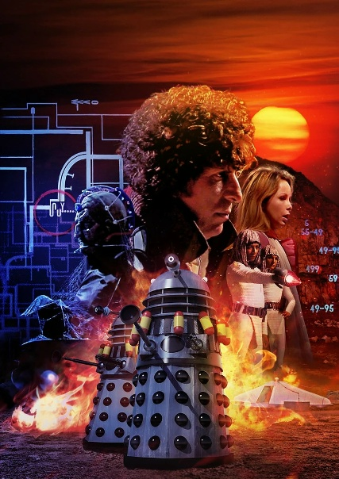
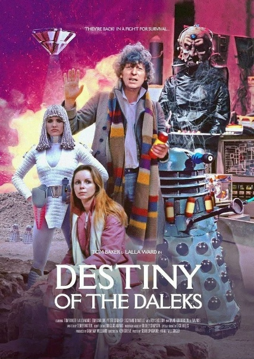

Эра Четвертого Доктора (17 сезон)
<<< НАЗАД ||| 1. Судьба далеков ||| ДАЛЬШЕ >>>
|  |
|---|---|
Субтитры: Русские и Английские | |
с обновленными спецэффектами Субтитры: Русские и Английские | |
с обновлением визуальных эффектов (cunningmunki) Субтитры: отсутствуют | |
Destiny of the Daleks
Дата выхода: 1-22 сентября 1979
Формат: 4 эпизода по 25 мин.
 |  камео |
ТАРДИС доставляет Доктора и Роману на руины планеты Скаро — родины далеков. Пока Романа неожиданно для всех меняет тело, Доктор обнаруживает, что далеки ведут затянувшую войну с мофелланами — расой андроидов с совершенной логикой. Обе стороны зашли в тупик: ни одна не может сделать ход, потому что логические компьютеры противников просчитывают друг друга идеально. Далеки ищут своего создателя Давроса, похороненного под руинами, надеясь, что его нестандартное мышление сломает патовую ситуацию. Первый сценарий Терри Нэйшна с далеками после пятилетнего перерыва, давший новую жизнь врагу номер один и заложивший основу для всех последующих появлений Давроса.
 VHS - июль 1994 / Boxset - сент.2001 |  DVD+Boxset - 26 ноября 2007 |  Blu-ray - 20 декабря 2021 * Версия в нашей группе |
|---|






Трейлер: